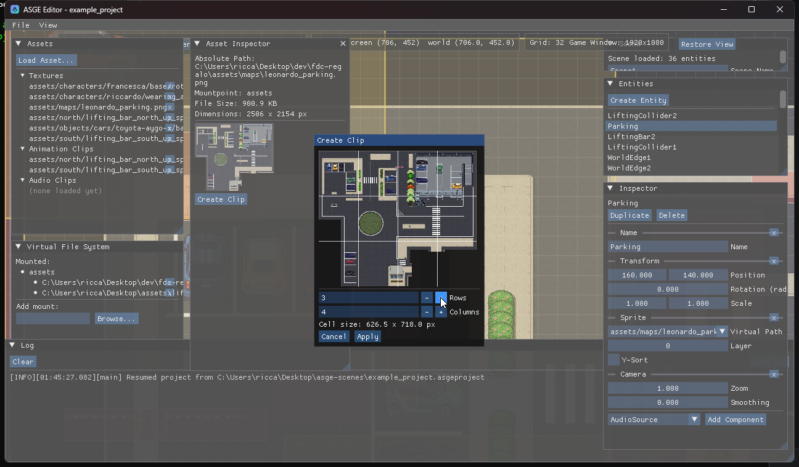
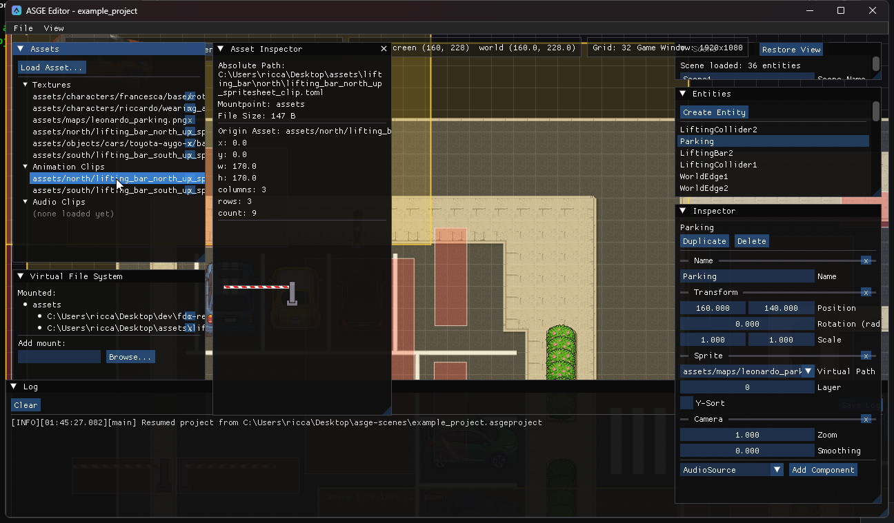

Assets & VFS
Assets are addressed by virtual path everywhere in ASGE; the editor gives you a panel for the mounts that back those paths and one for browsing/importing what they resolve to.
The Virtual File System panel lists every mount (a virtual root pointing at a real directory) and lets you add more via a native folder picker. The Assets panel lists every texture, animation clip, and audio clip the editor currently knows about -- either because some entity's component already references it, or because you explicitly Load Asset...-ed it (needed so an unused-but-imported asset still shows up with nothing in the scene referencing it yet).

Asset Inspector
Clicking any entry opens the Asset Inspector: absolute path, mountpoint, and file size for all three kinds, plus a kind-specific preview --
Texture
Pixel dimensions and a scaled thumbnail.
Audio clip
Duration, size, and working Play/Pause + Rewind transport controls.
Animation clip
Every FrameTable field plus a live, actually-cycling preview of its sliced frames.
In-editor spritesheet slicing

A texture's Asset Inspector has a Create Clip
button that opens a modal: a bigger thumbnail with a live grid overlay redrawn as you change
Rows/Columns, and a computed per-cell pixel size. Apply
writes <image>_clip.toml next to the texture (creating or overwriting it), then
registers and selects it as a new animation clip -- no external tool or hand-written TOML needed
to turn a spritesheet into something an Animation component can play.
A clip records which texture it slices (m_OriginAsset), so once one exists, that
texture's button becomes Open Clip instead, jumping straight to it. Importing a
.toml by hand via Load Asset... that doesn't identify its own
texture this way is rejected rather than imported half-configured.
